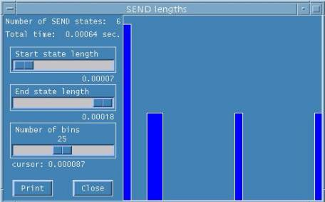

hyPACK-2013 Mode 1 : Performance Visualization Tools : Multi-Core Processors
|
Performance visualization tools such as Intel Thread Checker,
Intel Vtune Performance analyzer, Intel thread Debugger, Sun Studio, Etnus
Totalview Debugger, Upshot, Jumpshot, PAPI (Public domain tools) and IBM Tools are used in
order to help the programmer to understand the behavior of a parallel (MPI/Pthreaded) programs
and understand performance of application.
Example programs based on Pthreads, OpenMP, MPI, and Intel TBB programs using different APIs, and
programs based on numerical and non-numerical computations
are Chosen for to understand performance issues using Intel Software Tools and Open Source
software tools on Parallel Processing technologies.
|
|
|
Introduction
|
|
Performance is a critical issue in the current cluster of workstations. However, delivery of adequate
performance is not automatic and performance evaluation tools are required in order to help the programmer
to understand the behavior of a parallel program. Performance evaluation and visualization is an
important and useful technique that helps the user to understand and improve complex parallel
performance phenomena. In order to produce MPI applications that perform well on today's parallel
architectures, programmers need effective tools for collecting and analyzing performance data.
Because programmers typically work on more than one platform, cross-platform tools are highly
desirable. A variety of such tools, both commercial and research, are becoming available.
Performance visualization tools such as Intel Thread Checker, Interl Vtune Performance analyzer,
Intel thread Debugger, Sun Studio, Etnus totalview Debugger, Upshot, Jumpshot (Public domain) , IBM Tools and
C-DAC HPCC tools (C-DAC, 1998) have been developed in order to help the programmer to understand the
behavior of a parallel program and understand complex performance processes in order to produce MPI
applications that perform well on today's parallel architectures, performance evaluation and visualization
is an important and useful technique that helps the user to understand and improve complex parallel
performance phenomena. Performance is a critical issue in current massively parallel processors.
However, the delivery of adequate performance is not automatic and performance tools are required
in order to help the programmer to understand the behavior of a parallel program.
Performance visualization is the use of graphical display techniques to present an analysis of performance
data for an improved understanding of complex performance phenomena. Performance visualization systems
for parallel programs have been helpful in the past and they are commonly used in order to improve
parallel program performance. However, despite the advances that have been made in visualizing
scientific data, techniques for visualizing performance of parallel programs remain adhoc and
performance visualization becomes more difficult as the parallel system becomes more complex.
Performance visualization tools have been developed in order to help the programmer to understand the
behavior of a parallel program and understand complex performance processes. Massively parallel
processors can generate a huge amount of performance data and sophisticated methods for representing
and displaying this data are required. Visualization must be carefully used in order to get useful
results. In general, current performance views are not scalable and they do not represent an abstraction
of the performance data. If performance visualization is to become an integral tool in parallel
performance evaluation, it must be based on a formal foundation that relates abstract performance
behavior to visual representations. Parallel performance visualization offers a wide range of
research opportunities, and one of these is the designing and development of new scalable performance
data representations. These data representations should have the following features:
|
(a).
|
Scalability (i.e. number of processors, problem size)
|
(b).
|
Higher level of abstraction than that of existing views
|
(c).
|
Usefulness: a performance view must be useful in the process of understanding
parallel program behavior.
|
(d).
|
Incorporation and integration of state-of-the-art technologies including:
application domain expertise, visual perception and graphic design.
|
|
Parallel performance visualization has already been identified as a useful technique and
work related to abstract performance views and several authors have carried scalability.
Not only visual but also aural methods are being explored in order to represent parallel
performance data. Visual and aural portrayals of parallel program execution and used to
gain insight into how a program is working. The combination of portrayals in a coordinated
performance environment provides the user with multiple perspectives and stimuli to
comprehend complex, multidimensional run-time information. A programmer should begin
the investigation into causes of performance degradation with high-level and abstract
views, proceeding from the highest level to the lowest level. While a collection of
views, animations and general performance data can help uncover performance bugs,
some guidelines or strategies are needed to direct the order in which views are
examined.

|
|
An Overview of Performance Analysis
|
Three basic steps in the performance analysis (data collection, data
transformation, and data visualization) process need to be distinguished. Data collection is the process by which the data
about program performance are obtained from an executing program. Data is normally collected
in a file, either during or after execution, although in some situations it may be presented
to the user in real time. Three basic data collection techniques can be distinguished:
-
Profiles: record the amount of time spent in different parts of a program. This information,
though minimal, is often invaluable for highlighting performance problems. Profiles typically
are gathered automatically.
-
Counters :
record either frequencies of events or cumulative times. The insertion of counters
may require some intervention from the programmer.
-
Event traces : record each occurrence of various specified events, thus typically producing a
large amount of data. Traces can be produced either automatically or with programmer intervention.
The raw data produced by profiles, counters, or traces are rarely in the form required to
answer performance questions. Hence, data transformations are applied, often with the goal
of reducing total data volume. Transformations can be used to determine mean values or other
higher-order statistics or to extract profile and counter data from traces. For example, a profile
recording the time spent in each subroutine on each processor might be transformed to determine
the mean time spent in each subroutine on each processor, and the standard deviation from this
mean. Similarly, a trace can be processed to produce a histogram giving the distribution of
message sizes. Each of the various performance tools described in subsequent sections
incorporates some set of built-in transformations; more specialized transformation can
also be coded by the programmer.
Parallel performance data are inherently multidimensional, consisting of execution times,
communication costs, and so on, for multiple program components, on different processors, and for
different problem sizes. Although data reduction techniques can be used in some situations to
compress performance data to scalar values, it is often necessary to be able to explore the raw
multidimensional data. As is well known in computational science and engineering, this process
can benefit enormously from the use of data visualization techniques. Both conventional and more
specialized display techniques can be applied to performance data. Next, we examine in more detail
the techniques used to collect performance data. We consider in turn profiling, counters, and
event traces, focusing in each case on the principles involved.
Profiles
The concept of a profile should be familiar from sequential computing. Typically, a profile shows the
amount of time spent in different program components. This information is often obtained by sampling
techniques, which are simple but not necessarily highly accurate. The value of the program counter is
determined at fixed intervals and used to construct a histogram of execution frequencies. These
frequencies are then combined with compiler symbol table information to estimate the amount of time
spent in different parts of a program. This profile data may be collected on a per-processor basis
and may be able to identify idle time and communication time as well as execution time.
Profiles have two important advantages. They can be obtained automatically, at relatively low cost,
and they can provide a high-level view of program behavior that allows the programmer to identify
problematic program components without generating huge amounts of data. (In general, the amount of
data associated with a profile is both small and independent of execution time.) Therefore, a profile
should be the first technique to be considered when seeking to understand the performance of a parallel
program.
A profile can be used in numerous ways. For example, a single profile on a moderate number of
processors can help identify the program components that are taking the most time and that hence
may require further investigation. Similarly, profiles performed for a range of processor counts and
problem sizes can identify components that do not scale.
Profiles also have limitations. In particular, they do not incorporate temporary aspects of program
execution. For example, consider a program in which every processor sends to each other processor in turn.
If all processors send to processor 0, then to processor 1, and so on, overall performance may be poor.
This behavior would not be revealed in a profile, as every processor would be shown to communicate the same
amount of data.
Profilers are available on most parallel computers but vary widely in their functionality and
sophistication. The most basic do little more than collect sequential profile data on each processor;
the most sophisticated provide various mechanisms for reducing this data, displaying it, and relating
it to source code. Because efficient profiling requires the assistance of a compiler and runtime system,
most profiling tools are vendor supplied and machine specific.
Counters
As its name suggests, a counter is a storage location that can be incremented each time a specified
event occurs. Counters can be used to record the number of procedure calls, total number of messages,
total message volume, or the number of messages sent between each pair of processors. Counters may be
generated by compiler-generated code, by code incorporated in communication libraries, or by user-inserted
calls to counter routines. Counters complement profilers by providing information that is not easily
obtainable using sampling techniques. For example, they can provide the total number and volume of
messages, information that can be combined with communication time data from a profile to determine
the efficiency of communication operations. A useful variant of a counter is an interval timer;
a timer used to determine the length of time spent executing a particular piece of code.
This information can be accumulated in a counter to provide an accurate determination of the total
time spent executing that program component. A disadvantage of interval timers is that the logic
required to obtain a timer value can be expensive.
Traces
An execution trace is the most detailed and low-level approach to performance data collection.
Trace-based systems typically generate log files containing time-stamped event records representing
significant occurrences in a program's execution, such as calling a procedure or sending a message.
Trace records may include information such as the type of event and the procedure name or destination
task, and can be generated either automatically or under programmer control.
Trace-based approaches support a particularly broad study of program behavior.
They can be used to examine casual relationships between communications, to localize sources of idle
time, and to identify temporary hot spots. For example, an execution trace could be used to determine
that all processors are sending to the same processor at the same time. An execution trace can also be
post processed to obtain profile, count, and interval timer information; to compute higher-order statistics
such as the means and variances of these values; and to obtain other data such as mean message queue
length in a message-passing system.
The disadvantages of trace-based approaches stem primarily from the huge volume of data that can be
generated. Particularly when a program is executing on large numbers of processors, it is easy to
generate tens, hundreds, or even thousands of megabytes of data. This large data volume has three
unwelcome consequences.
-
Logging of this data tends to perturb performance, thereby leading to what is called the probe effect
in which the measuring of performance data changes their characteristics.
-
The sheer volume of data makes post processing difficult. Frequently, sophisticated analysis is
required to extract relevant information.
-
The programmer, in order to combat the problems caused by volume, may have to spend considerable
effort tuning the data collection process so that only relevant events are recorded while the
phenomenon of interest is retained.
Tracing then becomes a labor-intensive process. For these reasons, tracing should be used with
care and only if other data collection techniques are not available or do not provide sufficient
information. Many parallel programming tools provide some automatic tracing capabilities, for example
by generating a trace record for every message generated or received. These capabilities are invoked
by linking with a specialized version of a communication library and/or by a runtime flag. Mechanisms
for generating user-defined events may also be provided. In principle, event traces can be interpreted
in various ways by using different tools. A stumbling block here is a lack of standards for event log
records.
|
|
Characteristics of Visualization Tools
|
|
The reasons for poor performance of parallel message-passing codes can be varied and complex,
and users need to be able to understand and correct performance problems. Performance
tools can help by monitoring a program's execution and producing performance data that can
be analyzed to locate and understand areas of poor performance. There are number of performance
tools, both research and commercial, that are available for monitoring and/or analyzing the
performance of MPI message-passing parallel programs. The tool must have good characteristics
in order to assist the user to understand performance anomalies in the parallel program.
When selecting a tool for a particular task, the following issues should be considered:
Accuracy: In general, performance data obtained using sampling techniques that are less
accurate than data obtained by using counters or timers. In the case of timers, the accuracy
of the clock must be taken into account.
Simplicity: The best tools in most circumstances are those that collect data automatically,
with little or no programmer intervention, and that provide convenient analysis capabilities.
Flexibility: A flexible tool can be extended easily to collect additional performance
data or to provide different views of the same data. Flexibility and simplicity are often
opposing requirements.
Intrusiveness: Unless a computer provides hardware support, performance data collection
inevitably introduces some overhead. We need to be aware of this overhead and account for
it when analyzing data.
Abstraction: A good performance tool allows data to be examined at a level of abstraction
appropriate for the programming model of the parallel program. For example, when analyzing
an execution trace from a message-passing program, we probably wish to see individual
messages, particularly if they can be related to send and receive statements in the source
program. However, this presentation is probably not appropriate when studying a data-parallel
program, even if compilation generates a message-passing program. Instead, we would like to
see communication costs related to data-parallel program statements.
A number of commercial and research tools are available for performance analysis of Threaded
and MPI
programs. The most prevalent approach taken by these tools is to collect performance data
during program execution are then provide post-mortem analysis and display of performance
information. Some tools do both steps in an integrated manner, while other tools or tool
components provide just one of these functions. A few tools also have the capability for
run-time analysis, either in addition to or instead of post-mortem analysis. A similar
procedure for testing each tool and using a common set of evaluation criteria is required.
In the first step, the software is installed using the instructions provided in the manual.
After the software has been installed successfully, user works through specific tutorial or
examples that are provided so that he/she can become familiar with the tool. Finally,
we attempt to use the tool to analyze a number of test programs. A set of Evaluation
criteria based on the following is investigated.
|
|
Robustness
Usability
Scalability
Portability
Versatility
Robustness :
For robustness, we expect the tool to crash infrequently and features to work correctly as
claimed by the developer. Errors should be handled by displaying appropriate diagnostic
messages. The error should be indicated in a file or on the standard output device.
Also, the tool should not cause the user to get stuck when he/she takes a wrong action
by mistake. The tool should prompt the user and give proper feedback in detailed fashion.
Such kind of error messages should be given in the technical manual. Research tools are
not expected to be as robust as commercial tools, but if the tool has been released for
public use, considerable effort should still have been invested in debugging it and on
error handling. The installation procedure for the tool should be as simple as possible
so that user can link the tool during compilation/execution time easily.
Usability :
To be useful, a tool should have adequate documentation and support, and should have an
intuitive easy-to use interface. On-line help and manual pages are also helpful for
usability. Although research tool developers cannot provide extensive support for free,
we consider an email address for questions and bug reporting to be a minimum requirement
for a tool that has been released for public use. Adequate functionality should be
provided to accomplish the intended task without putting undue burden on the user to
carry out low-level tasks, such as manual insertion of calls to trace routines,
or sorting and merging of per-process trace files without assistance. A set of questions
and answers should be made available in the form FAQ so that user can see the importance
and use of this tool. The tool should support SPMD and MPMD programming paradigms.
Scalability :
For scalability, we look for the ability to handle large numbers of processes and large
or long-running programs. The problem size and the machine size are increased to study
the performance anomalies, keeping Amdahl 's law and Gustafson's law for scalability.
Scalability is important both for data collection and for data analysis and display.
For data collection, desirable features are scalable trace file formats, a mechanism
for turning tracing on and off, and filtering of which constructs should be instrumented.
For data analysis and display, important scalability features include ability to zoom in
and out, aggregation of performance information, and filtering. Also, the overheads in
usage of memory and CPU are analyzed for each tool for increase in problem size with
respect to increase in machine size.
Portability :
Because of the short lifespan of high performance computing platforms and because many
applications are developed and run in a distributed heterogeneous environment, most parallel
programmers will work on a number of platforms simultaneously or over time. Portability is a
relative measure, which depends on both the language used and the target machine.
Programmers are understandably reluctant to learn a new performance tool every time they move
to a new platform. Thus, we consider portability to be an important feature. For portability,
we look for whether the tool works on most major platforms and for what MPI implementations
and languages it can handle. The tool must be easily usable when compilers, system area
networks, and the message passing libraries are changed and should produce correct behavior,
keeping certain computational characteristics in mind.
Versatility :
For versatility, we look for the ability to analyze performance data in different ways and
to display performance information using different views. Providing a unified view of the
profiling data generated by each process buy modifying the time stamps of events on different
processes so that all the processes start and end at the same time and provide a convenient
form for visualizing the profiling data in a Gantt chart, Histograms and Graphs. Another
feature of versatility is the ability to inter-operate with other trace formats and tools.
There should be special features in tools to provide an abstract representation of
performance. Sophisticated methods are required for representing and displaying the data
in visual and aural forms. Tools must have interesting features to represent particular
fragment in a program in the form of 3D display of surface. To provide useful information
for the user, the important goals of the tools to provide an abstract representation of
program performance are considered allowing detection of unknown bottlenecks using 3D
displays, and to provide scalable views for programs running on a large number of
processors.
An emerging parallel programming paradigm is to use message passing between nodes and
shared memory (e.g., OpenMP) within a node. Most performance analysis tools were originally
developed to support only one of these models, but tools that support both models
simultaneously are highly desirable.
|
|
Characteristics: Performance Issues In Algorithm Design
|
|
|
In writing efficient message-passing programs, one must take into consideration a number of
factors. Many times, these factors are at odds with each other, and a careful balance needs
to be derived. Key to successful message-passing programming (as well as ordinary sequential
programming) is the selection of the appropriate parallel algorithm. Various scientific problems
exhibit the same type or different amount of concurrency in parallel algorithm. Concurrency
(or parallelism as it is most frequently referred to) is of paramount importance in parallel
programming, and its detection and specification is one of the two key steps in the design
of parallel algorithms (data and task distribution is the other). Message-passing programs
need to effectively distribute the various data-structures that are manipulated during the
execution of the algorithm as well as the computation among the processors. By properly
distributing the data-structures and the computation, a program can reduce the communication
overhead and increase the utilization of the parallel computer.
Thus, in order to be suitable for programming using message-passing, parallel algorithms must
also specify data and/or task distribution. In the rest of this section, we discuss the various
properties that a parallel algorithm must have so that a message-passing program implementing
this algorithm will be able to attain high performance on a wide range of clusters. Also, the
tool can provide good insight for such kind of parallel programs to know the performance
issues. These properties can be used both as a guide in evaluating the potential performance
of competing parallel algorithms as well as a framework to be used in developing effective
message-passing parallel algorithms. The tools can assist the user in giving accurate
information on performance and scalability issues of the programs.
Concurrency
Decomposition
Load Balance
Overheads
Maximize Concurrency
Equal Workload
Maximize Data Locality
Minimize Frequency of Data Transfers
Concurrency:
In general, given a single task, it is possible to decompose and map it to processors in many
different ways. Some of these yield better performance than others. Furthermore, different
decompositions and mappings may yield good performance on different computers for a given problem.
It is therefore crucial for programmers to understand the relationship between the underlying
machine model (SIMD / MIMD) and the parallel program to develop efficient programs.
The decomposition methods that help us discover tasks that can be done concurrently, methods
for mapping these tasks to processors so that the processors are efficiently utilized, and
methods for handling and reducing interactions among tasks so that the processors are all
doing useful work most of the time. The type of parallelism that is result of identical
operations being applied concurrently on different data items is called data parallelism.
Besides the data parallelism, there are task parallelism and stream parallelism. Combinations
of tasks and Data parallelism often allow us to utilize the coarse granularity inherent in
task parallelism with the granularity in data parallelism with the fine granularity in
data parallelism to effectively utilize a large number of processors.
Decomposition :
For many problems, the underlying task graph naturally contains sufficient degree of concurrency.
Given such a graph, tasks can be scheduled on multiple processors to solve the problem in
parallel. Unfortunately, there are many problems for which the task graph consists of only
one task, or multiple tasks that need to be executed sequentially. For such problems,
we need to split the overall computations into tasks that can be performed concurrently.
The process of splitting the computations in a problem into a set of concurrent tasks is
referred to as decomposition. A good decomposition should have the following steps.
It should lead to high degree of concurrency.
The interaction among tasks should be as little as possible.
Decomposing a problem effectively is of paramount importance in parallel computing. Without
a good decomposition, we may not be able to achieve to a high degree of concurrency, making
it impossible to really exploit parallelism and reduce the amount of time required in solving
a problem. These techniques are broadly classified as recursive decomposition,
data decomposition, exploratory decomposition, and speculative decomposition.
Data decomposition is a powerful method for deriving concurrency in algorithms that operate on
large data structures. In the first step, the data (or the domain) on which the
computations are performed is partitioned, and in the second step, this data partitioning
is used to induce a partitioning of the computational into tasks. These tasks generally
perform similar operations on different data elements. Hence, data decomposition often leads
to data level parallelism. The partitioning of data can be performed in three ways: Partitioning
Output Data, Partitioning Intermediate Data, and Partitioning Input data.
Load-balance :
Given a set of tasks and a set of processors there are many ways of performing this mapping.
In deciding which mapping is better we must focus on which one better achieves the following
two objectives.
-
The amount of computation assigned to each processor is balanced so that some processor does
not idle when others are executing tasks
-
The interactions among the different processors is minimized, so that the processors
spend most of the time in doing work that is essential for solving the problem even
on serial
computers.
Load balancing algorithms can be classified into two categories. Static and dynamic
load balancing. Static load balancing techniques distributes the work among processors prior
to execution of the algorithm. Dynamic load balancing techniques distribute the work among
processors during the execution of the algorithm. Algorithms that can be load-balanced
statically are in general easier to design and program. On the other hand algorithms that
require dynamic load balancing are somewhat more complicated. However, there are problems
in which we cannot statically partition the work among the processors.
There are three general classes of problems that fall into this category. The first class
consists of problems in which all the tasks are available at the beginning of the computation,
but the amount of time required by each task is different and cannot be determined easily.
The second class consists of problems in which tasks are available at the beginning but as
the computation progresses, the amount of time required by each task changes. The third class
consists of problems in which tasks are generated dynamically. In these class of problems,
a static work partitioning is either impossible (e.g. first class) or can potentially lead to
serious load imbalance problems (e.g. second and third classes). The only way to develop
efficient parallel programs for these classes of problems is if we allow dynamic load balancing.
That is during execution of the program, work is dynamically transferred among the processors
that have a little work or no work.
Overheads : (Idling Overheads & Data sharing Overheads)
Given a set of tasks and a set of processors there are many ways of mapping onto the performance
on parallel computer. One must focus on the mapping, which gives good results in a parallel
algorithm that yields the highest performance. Ideally, user will like to develop a parallel
program that is able to achieve linear speedups. The time that is required by the parallel
algorithm but is not essential to the serial algorithm is referred to as overhead due to
parallelization. Minimizing these overheads is critical in developing efficient parallel
algorithms. Parallel algorithms can potentially incur three types of overheads. The first
is due to idling, the second is due to data sharing and synchronization, and the third is
due to extraneous computations. We describe some of these overheads in detail.
Idling Overheads :
Processors can become idle for three main reasons. The first reason is due to load imbalances,
the second is due to computational dependencies, and the third is due to interprocessor
information exchange and synchronization. Computations in which the work is equally distributed
among the processors are called load balanced. If the work is not load balanced, then the
processors with less work will finish first and stay idle while waiting for the processors
with more work to finish with their computations.
For some problems, we can easily develop parallel algorithms that are load-balanced;
however, for other problems designing load-balanced algorithms significantly challenging.
In simplest case, the amount of work performed by each task is the same. However, there are some
problems in which the amount of computation per task is significantly different and it is
not known prior. Also, for many problems, distributing the computations equally among
the processors is not sufficient ensure that idling is eliminated. This is particularly
true for computations in which there are dependencies between tasks.
In fact, the loads before and after synchronization may be different which results in significant
overheads. Minimizing idling among the processors is critical, since every time a processor
becomes idle, it does absolutely nothing towards the solution of the problem.
Data Sharing Overheads :
The sharing of data often leads to additional overheads that are inherent to the parallel
algorithms, They must be minimised as they directly affect the performance achieved by this
algorithm. Depending on the underlying architecture, data sharing can take different forms.
On distributed memory machines, data is initially partitioned among the processors.
Explicitly sending and receiving messages achieve data sharing. In this framework,
the cost of data sharing is rather explicit, and minimizing the data sharing overheads
directly translates to reducing the communication overhead.
On shared address-space machines, data sharing is often performed implicitly. Data is
initially partitioned among the processors. In this type of architectures, the data
is stored in the shared memory and every processor can read and write to them. Even
though the data is accessible by all processors but data sharing overheads still exists.
Data sharing overheads become worse when shared data needs to modify the data at a time
and possibly no processor is reading the data while the modification is taking place.
Developing algorithms that minimize data sharing overheads often involves intelligent
task decomposition, task distribution, initial data distribution and proper scheduling
of the data sharing operations, all of which play an important role for performance of
a parallel program.
Parallel algorithm can potentially perform two types of extraneous computations. The first
type consists of non-essential computations that are performed by the parallel algorithm but
the serial program does not require them. In a parallel algorithm, non-essential computations
often arise either because of speculative execution or because of exploratory execution
between the processors. In some applications, the processors may end up in doing redundant work.
In general, performing frequent processor interactions to check whether or not similar work
has been already generated can eliminate redundant computations.
Maximize Concurrency :
Concurrency provides an abstraction to simple concurrent for implementations software algorithms
or applications that are naturally parallel. when multiple software threads of execution are
running in parallel, it means that the active threads are running simultaneously on different
hardware resources or processors of computing system.
Parallel algorithms, irrespective of the programming language used to implement them, should be
able to utilize effectively a large number of processors. Many times the algorithm used can
limit the amount of parallelism that can be exploited. Often, simply having more processors
performing the computations previously performed by a single processor can increase concurrency.
Concurrency in Multi-threaded programs depends upon both hardware and software. Designing
optimized way of managing the shared resources used at a given time is important. In other words,
efficient resource utilization is the key to maximize the performance of computer resources.
Equal Workload :
Parallel algorithms should effectively utilize the hardware resources to be able to solve the
given problem in the least amount of time. This directly implies that each processor
must perform an equal amount of work. In parallel computing terminology this is referred
to as the computation being load-balanced. Computation is load-balanced when each processor
performs the same amount of computation, the same amount of communication, requires the same
amount of memory, and spends minimal amount of time idling while it is waiting for messages.
If different processors do different amount of work, then all processors have to wait until
the processor with the most work finishes.
Maximize Data Locality :
Research in parallel algorithm design has developed a variety of techniques that can be often
used to reduce the communication and increase the data-locality. One commonly used technique
is to replicate data that is frequently accessed but not changed on all the processors. Data
replication is very powerful and can significantly reduce the amount of communication.
However, care must be taken to ensure that data-replication does not significantly increase
the aggregate memory requirements of the algorithm.
Another technique that often decreases the amount of time spent in communication is
to increase the amount of work performed by each processor by using fewer processors.
This approach essentially builds data locality by simply assigning more data elements
to each processor. Note that this approach is in direct conflict with the objective of
using a large number of processors and exploit as much concurrency as possible.
Parallel algorithms and programs should be developed so that they can effectively
operate on a wide range of processors.
Minimize data Transfer :
Selecting a parallel algorithm that minimizes the frequency of data transfers is preferable,
even if it does not reduce the overall volume of data being transferred.
This is usually achieved by first gathering the data that needs to be of time required
to transfer the data. Transfer of data is also highly desired in sequential algorithm,
which is similar to minimizing communication. On a serial computer, every time
a word not residing in the cache is accessed, a predetermined number of words equal to
the size of the cache-line are transferred from the main memory to the cache memory.
Effective sequential algorithms must use most of these words otherwise significant bandwidth
is wasted.
|
|
Debugging Multi-Threaded Applications - Overview:
Multi-threaded applications are inherently more complicated than single-threaded applications.
The bugs may or may not surface when running under the debugger. Multi-threaded bugs are very
sensitive to the timings of events in an application.
Commercial multi-threaded tools such as Intel Thread Checker, Intel Vtune Performance analyzer,
Sun Studio and Etnus - total View Debugger and Open Source Tools such as MPI Performance Analyzer may provides quite lot
of clue to application developer to find the reasons for failure of the program as well as enhance the performance
of the program on Multi-core processors. The common debugging tools and thread checker may assist the user to
know abnormal behavior of multi-threaded program. Also, obtaining correct results for multi-threaded program is difficult
due to common errors in multi-threaded program such as data race conditions and synchronization issues.
Debugging :
The common coding errors that cause the multi-threaded program to fail should be investigated. Two categories of bugs founding multi-threaded applications are synchronized bugs and performance bugs. Synchronization bugs include race
conditions and deadlocks that cause unexpected and incorrect behavior. Performance bugs arise from unnecessary thread overhead due to thread creation or context switch overhead, and memory access patterns that are suboptimal for a given processor's memory hierarchy. There are debugging synchronization bugs that cause application to fail and information
such as accessing the shared resources at the time of failure and at the time of access to shared resources.
In most of the multi-threaded applications, the sequence of events that lead to a race condition or deadlock situation
is critical in determining the root cause of multi-threaded bug.
Using trace buffer, which is a mechanism for logging events that the developer is interested in monitoring, may
help to identify the reasons of failure of the code. Tracepoints are used, as part of debugger and a tracepoint
is similar with the concept of a breakpoint. A tracepoint is similar to a breakpoint except the instead of stopping
program execution when the applications program counter reaches that point, the debugger takes some other action.
This action can be printing a message or running other function.
For POSIX threads, debugging can be accomplished by using the GNU Project Debugger (GDB). The GDB provides a number of capabilities for debugging threads as given below.
Thread specific breakpoints, Listing of all threads in the system, the ability to switch between threads, the ability to apply commands to a group of threads, the ability to apply commands to a group of threads and automatic notification when new threads are created
Thread Checker:
It is necessary to use proper compiler flags to produce threaded-safe code and ensure that the results are sequentially correct before use the thread checker. Most of the commonly used thread checkers identify the following.
-
The thread checker usually collect the data and analyze the various common errors of multi-threaded program.
The results of the analysis main focus on errors observed, warning messages based on trace data.
It also provides a suggestion of possible causes for the threading errors, and suggested solutions with one-click diagnostic help.
-
The thread checker is used with the compile
support on the target system. Some thread checkers can do analysis of applications that
rely on dynamically linked libraries (DLLs) for which the source code is often unavailable.
-
When the thread checker is linked to the threaded program,
it relies on instrumentation and usually runs slower than it does without instrumentation.
-
Thread checker gives an even better understanding about the specific variables on each line, functions, and context.
-
Identify the commonly errors in Multi-threaded programming environment such as
Data races, and deadlocks that may be due to synchronization issues.
-
Identify the stalled threads and critical section - abonded locks.
-
Verification of results to compare the non-threaded and threaded results in the debugging environment of Multi-threaded programs.
-
Creates diagnostic messages for places in a program where its behavior in a multi-threaded environment is potentially nondeterministic.
-
Identify the threaded bugs to the source code line where the bug occurs.
Support analysis of threaded programs that use OpenMP, POSIX. OpenMP programs are threaded
programs can suffer from the same errors and performance problems as explicitly threaded applications,
|
|
List of MPI Performance Tools |
Upshot
(Public Domain Tool )
| URL |
http://www-fp.mcs.anl.gov/~lusk/upshot/ |
| Supported Languages |
Fortran 77/90/95, C, mixed Fortran and C |
| Supported Platforms |
Linux x86, SGI IRIX, Sun Solaris Sparc, IBM RS/6000 AIX,
Windows NT x86 |
| Requirements for Installation |
A cluster of workstations with Linux /Unix OS with Fast Ethernet as
interconnection network or any other proprietary interconnection network and system
software, mpich-1.2.3
|
Upshot is a parallel program performance analysis tool that comes bundled with
the public domain mpich implementation of MPI. Upshot is a trace analysis and
visualization package. By linking our source code with appropriate libraries
we can obtain information on the time spent by our program in each MPI function.
i.e trace events can be generated automatically by using MPE library -mpilog
which
comes with the freely available MPICH implementation and provides a number of useful
facilities, including debugging, logging, graphics, and some common utility routines
to create logfiles SLOG/ALOG/CLOG. Alternatively, the programmer can insert
event-logging calls manually. Upshot is used to display logfiles ALOG (event based
logging format).
Features of Upshot:
- Provides a unified view of the profiling data generated by each process
-
Modifies the time stamps of events on different processes so that all the processes
start and end at the same time.
-
Provides a convenient form for visualizing the profiling data in a Gantt chart.
-
Upshot's display tools shows all the state data derived from logged events.
-
A state is defined by a starting and ending event of a processor in a single timeline.
-
A histogram facility allows the use of histograms to summarize information about
state duration.
|
|
Jumpshot
(Public Domain Tool )
| URL |
http://www-unix.mcs.anl.gov/mpi/mpich/ |
| Version |
MPICH 1.2.1, Jumpshot-3 |
| Supported languages |
Fortran, C, C++ |
| Supported platforms |
AIX, Compaq Tru64 UNIX, HP-UX, IRIX, LINUX,
Solaris, WindowsNT/2000 |
Jumpshot is
a Java-based visualization tool for doing postmortem performance analysis. Using
Java instead of Tcl/Tk (that was used in some of the older visualization tools)
improves the portability, maintainability and functionalities of the tools.
There are several iterations of the tool. It uses MPE (Multi-Processing
Environment) library is distributed with the freely available MPICH
implementation and provides a number of useful facilities, including debugging,
logging, graphics, and some common utility routines to create logfiles SLOG/ALOG/CLOG.
Jumpshot is used to display logfiles SLOG (Scalable logfile format) which
address data-scalability issue of the logfile for visualization
Alog : An event-based
logging format. Its corresponding viewer is either Upshot or Nupshot.The
ALOG package is distributed as part of
MPE,
which is also distributed under
MPICH.
Clog : Another event-based
logging format. A descendant of ALOG and BLOG, Its corresponding viewer
is Jumpshot-2. The CLOG package is distributed as part of
MPE,
which is also distributed under MPICH
Slog :
A scalable logfile format. SLOG addresses the
data-scalability issue of the logfile. It is very easy to generate a large CLOG file
that renders the performance of Jumphsot-2 slow or even
useless. SLOG allows the viewer to read only portion(s) of the logfile
for visualization. One of the main goals of SLOG is to help users locate
interesting portion(s) of the logfile for analysis.
Features of Jumpshot:
-
Provides a Gantt chart display, which represents the various MPI calls and
user-defined states for each process and arrows, and messages exchanged
between those states.
- Filtering of states is possible so that only those states that are of interested are
displayed
- The time-line view can be zoomed and scrolled.
- Clicking
on a rectangle or an arrow brings up a box that displays more detailed
information about the state or message, respectively.
|
Compiling and Linking MPI programs ( Makefile to use UPSHOT tools) |
|
MPI Programs Using Tools on Message Passing Cluster |
Upshot
Performance visualization of MPI program
Hello_World.c that prints
message "Hello World" using Upshot.
a) Compile the Program using
Makefile
make
Hello_World
b) Create and Execute
the program ( .pg file )
Hello_World.pg
local 0
<machine name> 1 <path of
the executable>
<machine name> 1 <path of
the executable>
<machine name> 1 <path of
the executable>
./ Hello_World /* execution
of the program */
c) Convert clog to alog file.
/home/betatest/mpich-1.2.4/mpe/bin/clog2alog Hello_World
d)
View the log file
/home/betatest/mpich-1.2.4/mpe/viewers/upshot/bin/upshot
Hello_World.alog
This will popup a Setup window as shown in Figure 1.
Figure 1. Setup window of Upshot
Click " Setup" to load the selected log file, this will open a window displaying process
operations in a gantt chart as shown in Figure 2.
Figure 2. Gantt Chart of Upshot
This window displays events which are aligned on the parallel time lines of individual
processes, with processes on X-axis and Time on Y-axis. Each state is represented in a
different color. In this example, process with rank sends NumberOfIntervals to all
processes using MPI_Send. Each process calculates some part of PI value and send
the result to process with rank 0. Process with rank 0 receives all thepartial sums from
other processes using MPI_Recv , adds them and display the final result. The above
display shows that in this example, process with rank 2 takes more amount of time to receive
NumberOfIntervals from root and process with rank 0takes more amount of time to
receive partial sum from process with rank 3.
To visualize each state individually,
click on the color of the state beside the state name on the taskbar at the top.
This gives individual state displays in a histogram showing state duration by all
processes as shown in Figures 3 and 4.

|
|
|
Figure 3. MPI_Send state
|
Figure 4. MPI_Recv state.
|
This also gives total time taken by all processes for that particular call and start
state length and end state length.
|
|
Xprofiler
Profiler Visualization of MPI program
Pi_Collective.cusing Xprofiler.
a) Compile the Program
mpcc -pg -o
pi pi_collective.c
b ) Execute the Program
poe pi
-procs 4 -hfile ./hosts
c ) Load profile files using Xprofiler
xprofiler pi
-s gmon.out.0 gmon.out.1
gmon.out.2 gmon.out.3
This will pop up the main GUI of Xprofiler as shown in Figure 5.
Figure 5. Xprofiler main GUI
In Figure 5.,Functions are represented by green, solid-filled boxes in
the function call tree. The size and shape of each function box indicates
its CPU usage. The height of each function box represents the amount of
CPU time it spent on executing itself. The width of each function box
represents the amount of CPU time it spent executing itself, plus its
descendant functions.
The Flat Profile report as in Figure 6. shows you the total execution
times and call counts for each function (including shared library calls)
within your application.
Figure 6. Flat Profile
The Call Graph Profile as shown in Figure 7. gives
functions of your application, sorted by the percentage of total CPU usage
that each function, and its descendants, consumed.
Figure 7. Call Graph Profile
|
|
Other Tools Used on Parallel Processing Platforms |
|
Intel Thread Checker
Intel Vtune Performance analyzer
Intel Thread Profiler
Sun Studio
IBM Tools
Etnus totalview Debugger
MPI- Upshot, & Jumpshot
PAPI (Public domain tools)
Google Perf Tool
|
|
|
|
|